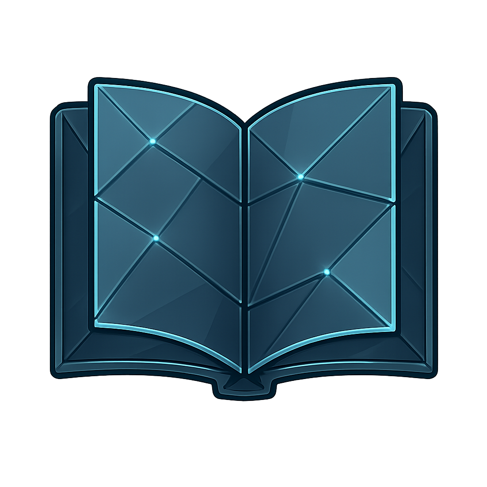

From the Lab to the Layperson

Beyond formal publications, I believe it's crucial to bridge the gap between academic research and real-world understanding. My articles on Medium are where I step outside the constraints of peer-reviewed papers to explore the broader implications of my work and the fields of cognitive neuroscience, experimental psychology and exercise science.
Featured Article
My first article explores the critical distinction between active fatigue (from high effort) and passive fatigue (from monotony), explaining why this difference is key to developing effective solutions for high-stakes professions.
Read "Tired, Bored, or Truly Fatigued?"